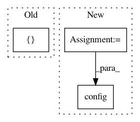

b98fb3d7cb96cd0677a95ca524b280351bf283c4,onmt/bin/preprocess.py,,process_one_shard,#Any#Any#,46
Before Change
fields,
readers=([src_reader, tgt_reader]
if tgt_reader else [src_reader]),
data=([("src", src_shard), ("tgt", tgt_shard)]
if tgt_reader else [("src", src_shard)]),
dirs=([opt.src_dir, None]
if tgt_reader else [opt.src_dir]),
sort_key=inputters.str2sortkey[opt.data_type],
After Change
src_data = {"reader": src_reader, "data": src_shard, "dir": opt.src_dir}
tgt_data = {"reader": tgt_reader, "data": tgt_shard, "dir": None}
align_data = {"reader": align_reader, "data": align_shard, "dir": None}
_readers, _data, _dir = inputters.Dataset.config(
[("src", src_data), ("tgt", tgt_data), ("align", align_data)])
dataset = inputters.Dataset(
fields, readers=_readers, data=_data, dirs=_dir,
sort_key=inputters.str2sortkey[opt.data_type],
In pattern: SUPERPATTERN
Frequency: 3
Non-data size: 3
Instances
Project Name: OpenNMT/OpenNMT-py
Commit Name: b98fb3d7cb96cd0677a95ca524b280351bf283c4
Time: 2019-11-22
Author: 419344739@qq.com
File Name: onmt/bin/preprocess.py
Class Name:
Method Name: process_one_shard
Project Name: okfn-brasil/serenata-de-amor
Commit Name: 65c2578d99e17559956416a8810e3f8be01f77db
Time: 2016-12-10
Author: cuducos@gmail.com
File Name: jarbas/settings.py
Class Name:
Method Name:
Project Name: HyperGAN/HyperGAN
Commit Name: f91e7ffdcb2cba161c6195cf8aefc8888a2e3527
Time: 2017-02-24
Author: mikkel@255bits.com
File Name: examples/2d-measure-accuracy.py
Class Name:
Method Name: train